◆『TV動畫「Fate/Grand Order -絕對魔獸戰線巴比倫尼亞-」放送記念Pick Up召喚(每日交替)』期間◆
期間:2019年10月2日(三) 17:00～10月16日(三) 11:59
舉辦期間限定『TV動畫「Fate/Grand Order -絕對魔獸戰線巴比倫尼亞-」放送記念Pick Up召喚(每日交替)』！
從有關TV動畫「Fate/Grand Order -絕對魔獸戰線巴比倫尼亞-」的從者之中「★5(SSR)伊絲塔(Archer)」以期間限定登場！
本次包含上述Pick Up5位從者！
「★5(SSR)伊絲塔(Archer)」「★5(SSR)恩奇杜」以每日交替Pick Up，「★4(SR)美杜莎(Lancer)」「★4(SR)吉爾伽美什(Caster)」「★3(R)牛若丸(Rider)」常駐Pick Up！
詳情請在聖晶石召喚畫面左下的召喚詳細確認。
並且，從目前為止登場的期間限定概念禮裝之中「★5(SSR)花より団子」「★5(SSR)王の相伴」「★5(SSR)熱砂の語らい」「★5(SSR)真夏のひと時」「★5(SSR)スターリー・ナイツ」「★5(SSR)ビター・スイート」以每日交替Pick Up！
◆有關從者的注意◆
※請注意『TV動畫「Fate/Grand Order -絕對魔獸戰線巴比倫尼亞-」放送記念Pick Up召喚(每日交替)』做為每日交替，「★5(SSR)伊絲塔(Archer)」就算Pick Up期間中也會有不被抽出的日子。
※「★5(SSR)伊絲塔(Archer)」在Pick Up期間結束後不會追加到故事召喚。
※「★5(SSR)恩奇杜」「★4(SR)美杜莎(Lancer)」「★4(SR)吉爾伽美什(Caster)」「★3(R)牛若丸(Rider)」在Pick Up期間結束後仍會在故事召喚被抽出。
◆有關概念禮裝的注意◆
※請注意2019年10月2日(三) 17:00～10月4日(五) 22:59、10月8日(二) 23:00～10月10日(四) 22:59、10月12日(六) 23:00～10月14日(一) 22:59之間，「★5(SSR)花より団子」「★5(SSR)スターリー・ナイツ」「★5(SSR)ビター・スイート」不會被抽出。
※請注意2019年10月4日(五) 23:00～10月7日(一) 22:59、10月10日(四) 23:00～10月12日(六) 22:59、10月14日(一 23:00～10月16日(三) 11:59之間，「★5(SSR)王の相伴」「★5(SSR)熱砂の語らい」「★5(SSR)真夏のひと時」不會被抽出。
Pick Up期間中，期間限定從者、Pick Up從者、期間限定概念禮裝的出現機率提升！
11次召喚中確定1張★4(SR)以上和確定1位★3(R)以上的從者！
※確定★4(SR)以上包含從者和概念禮裝。
※本頁面皆為開發中圖片。會有與實際圖片相異的情況。
◆『TV動畫「Fate/Grand Order -絕對魔獸戰線巴比倫尼亞-」放送記念Pick Up召喚(每日交替)』Pick Up內容◆
| Pick Up期間 | Pick Up內容 | |
|---|---|---|
| 從者 | 概念禮裝 | |
| 10/2(三) 17:00～ 10/4(五) 22:59 |
★5 伊絲塔(Archer) ★5 恩奇杜 ★4 美杜莎(Lancer) ★4 吉爾伽美什(Caster) ★3 牛若丸(Rider) |
★5 王の相伴 ★5 熱砂の語らい ★5 真夏のひと時 |
| 10/4(五) 23:00～ 10/7(一) 22:59 |
★5 伊絲塔(Archer) ★4 美杜莎(Lancer) ★4 吉爾伽美什(Caster) ★3 牛若丸(Rider) |
★5 花より団子 ★5 スターリー・ナイツ ★5 ビター・スイート |
| 10/7(一) 23:00～ 10/10(四) 22:59 |
★5 恩奇杜 ★4 美杜莎(Lancer) ★4 吉爾伽美什(Caster) ★3 牛若丸(Rider) |
★5 王の相伴 ★5 熱砂の語らい ★5 真夏のひと時 |
| 10/10(四) 23:00～ 10/12(六) 22:59 |
★5 伊絲塔(Archer) ★5 恩奇杜 ★4 美杜莎(Lancer) ★4 吉爾伽美什(Caster) ★3 牛若丸(Rider) |
★5 花より団子 ★5 スターリー・ナイツ ★5 ビター・スイート |
| 10/12(六) 23:00～10/13(日) 22:59 |
★5 伊絲塔(Archer) ★4 美杜莎(Lancer) ★4 吉爾伽美什(Caster) ★3 牛若丸(Rider) |
★5 王の相伴 ★5 熱砂の語らい ★5 真夏のひと時 |
| 10/13(日) 23:00～10/14(一) 22:59 |
★5 恩奇杜 ★4 美杜莎(Lancer) ★4 吉爾伽美什(Caster) ★3 牛若丸(Rider) |
★5 王の相伴 ★5 熱砂の語らい ★5 真夏のひと時 |
| 10/14(一) 23:00～ 10/16(三) 11:59 |
★5 伊絲塔(Archer) ★5 恩奇杜 ★4 美杜莎(Lancer) ★4 吉爾伽美什(Caster) ★3 牛若丸(Rider) |
★5 花より団子 ★5 スターリー・ナイツ ★5 ビター・スイート |
※請注意會以每日交替變更Pick Up從者及Pick Up概念禮裝。
 ※上述「★5(SSR)伊絲塔(Archer)」的卡面為靈基再臨第2階段。
※上述「★5(SSR)伊絲塔(Archer)」的卡面為靈基再臨第2階段。

 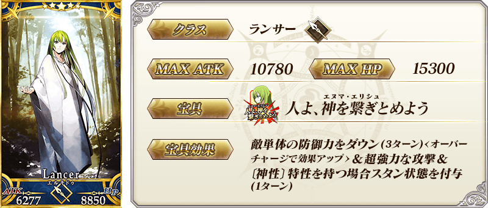
※上述「★5(SSR)恩奇杜」的卡面為靈基再臨第2階段。
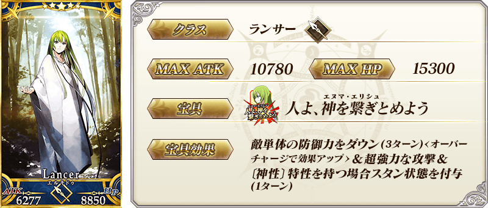
※上述「★5(SSR)恩奇杜」的卡面為靈基再臨第2階段。


 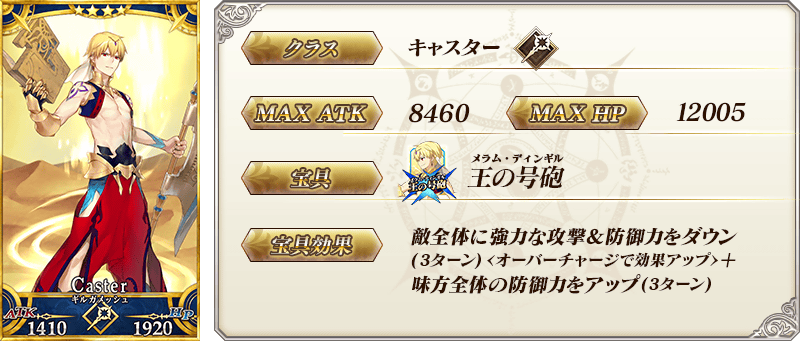
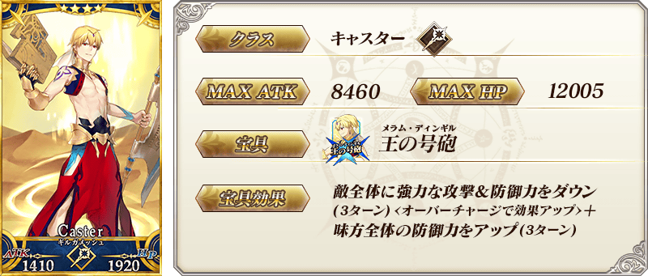
 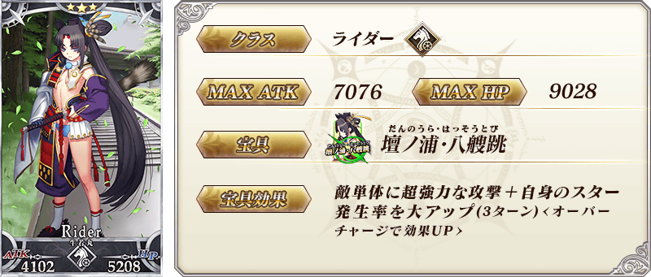
※上述「★3(R)牛若丸(Rider)」的卡面為靈基再臨第2階段。
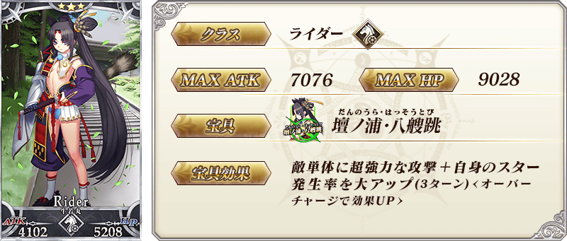
※上述「★3(R)牛若丸(Rider)」的卡面為靈基再臨第2階段。
| 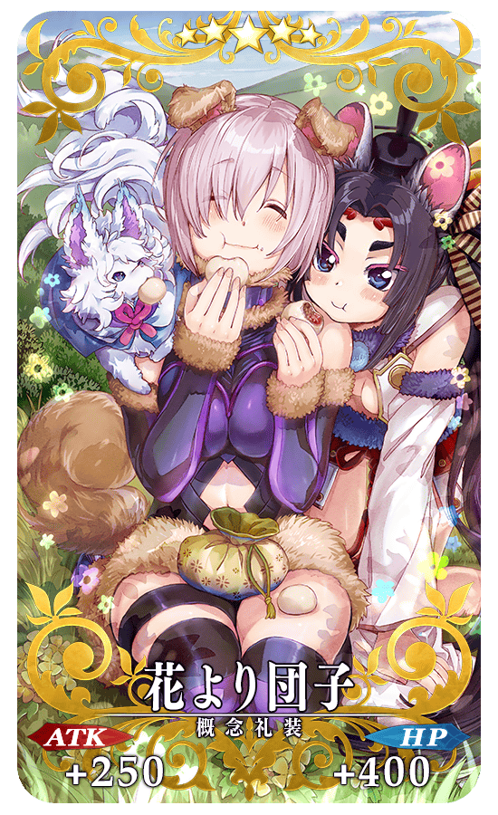 |
★★★★★SSR |
| 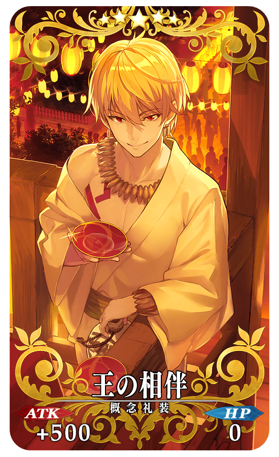 |
★★★★★SSR |

|
★★★★★SSR |
| 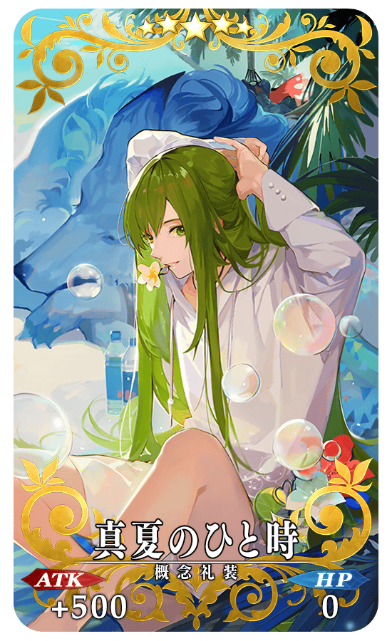 |
★★★★★SSR |
| 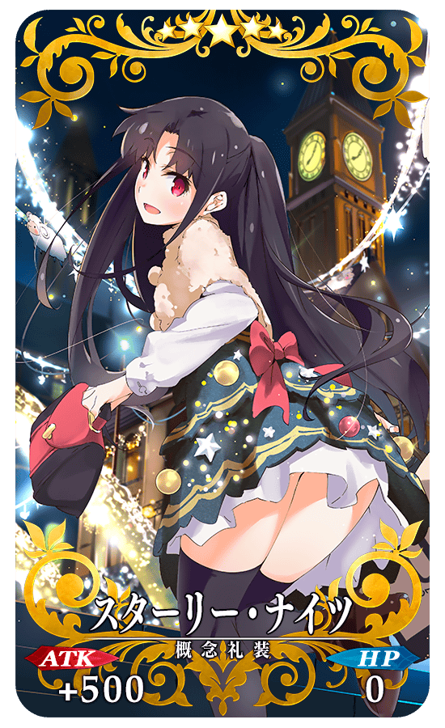 |
★★★★★SSR |
| 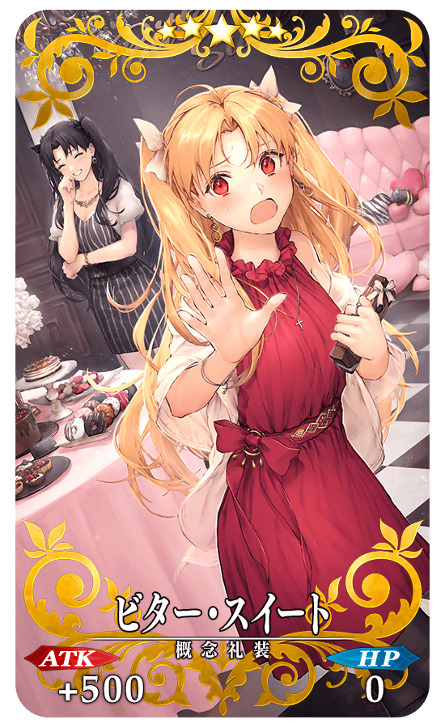 |
★★★★★SSR |
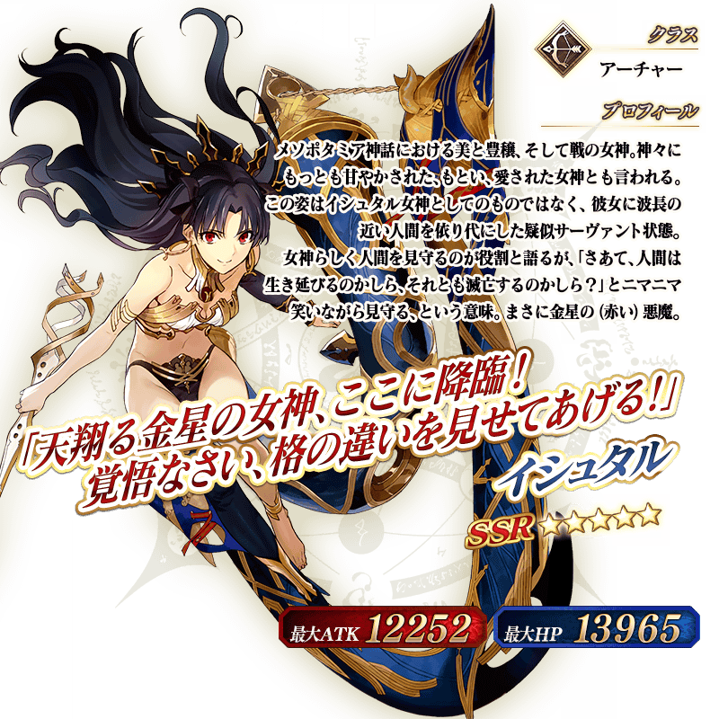 ※上述「★5(SSR)伊絲塔(Archer)」的立繪為靈基再臨第2階段。
 ※上述「★5(SSR)恩奇杜」的立繪為靈基再臨第2階段。
※上述「★5(SSR)恩奇杜」的立繪為靈基再臨第2階段。
向「★5(SSR)伊絲塔(Archer)」追加戰鬥動作！
※只有戰鬥動作的追加。寶具演出沒有變更。
◆實施時間◆
2019年10月2日(三) 17:00～
【10月2日(三) 17:00追加】
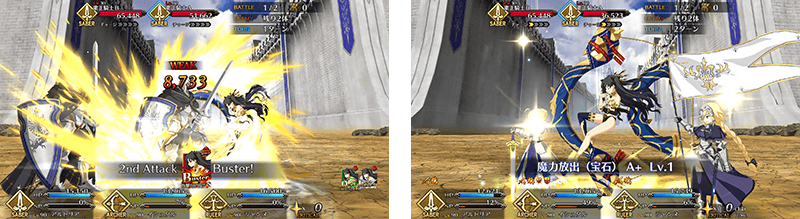
【10月2日(三) 17:00追記】
介紹「★5(SSR)伊絲塔(Archer)」的寶具演出！
在「Fate/Grand Order」官方網站內的公告中，以影片公開寶具演出，敬請確認。
介紹「★5(SSR)恩奇杜」「★4(SR)美杜莎(Lancer)」「★4(SR)吉爾伽美什(Caster)」的寶具演出！
「Fate/Grand Order」在官方網站內的公告中，以影片公開寶具演出，敬請確認。
其他還有，『TV動畫「Fate/Grand Order -絕對魔獸戰線巴比倫尼亞-」放送記念宣傳活動』同時舉辦！
關於詳情，請自下述橫幅確認。
■『TV動畫「Fate/Grand Order -絕對魔獸戰線巴比倫尼亞-」放送記念宣傳活動』詳細情報